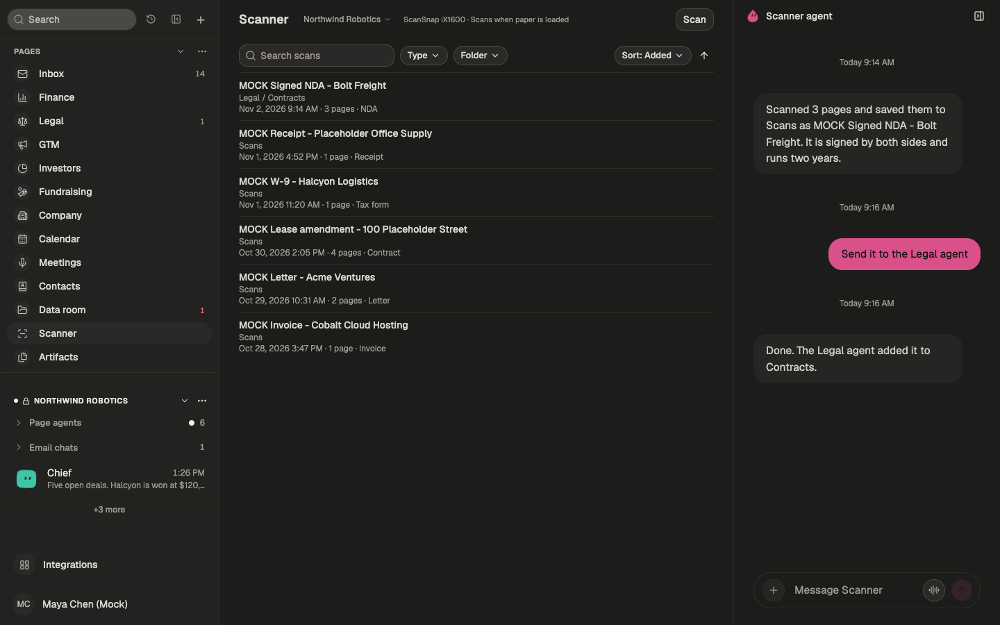
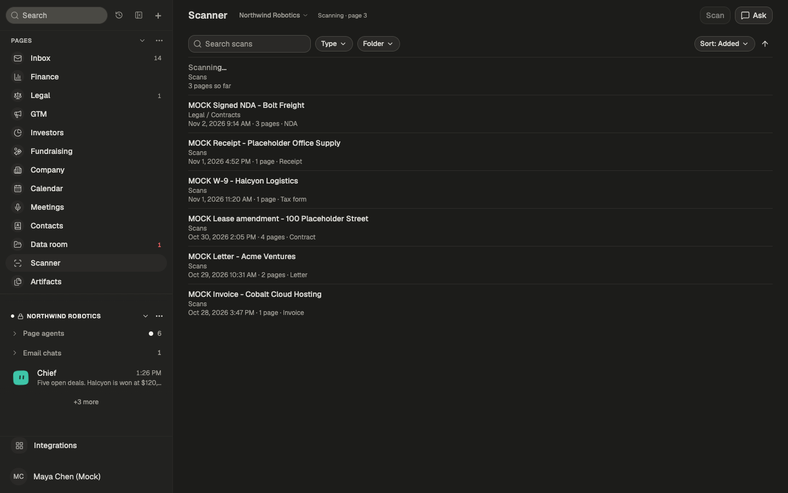
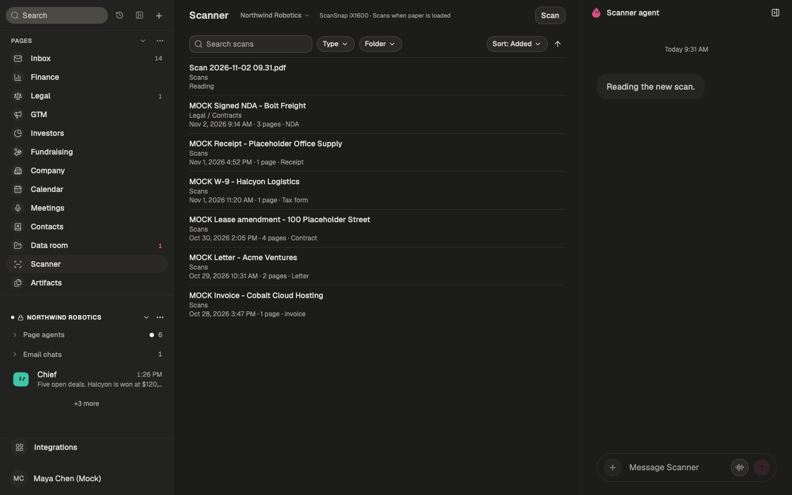
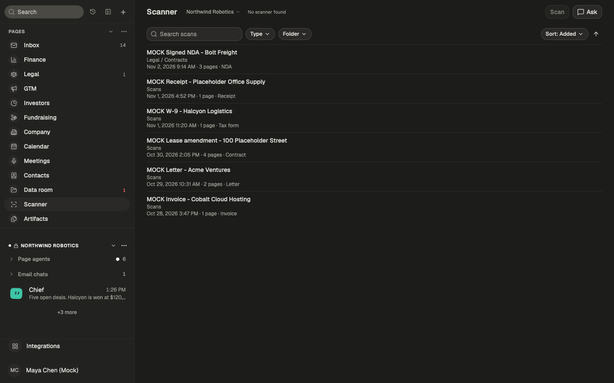
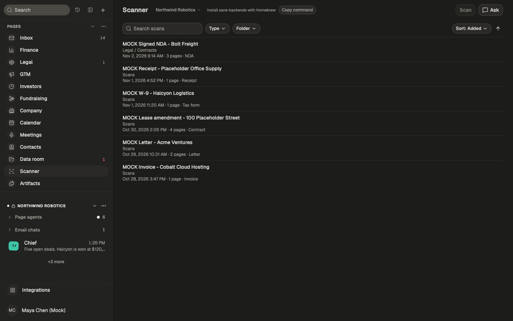
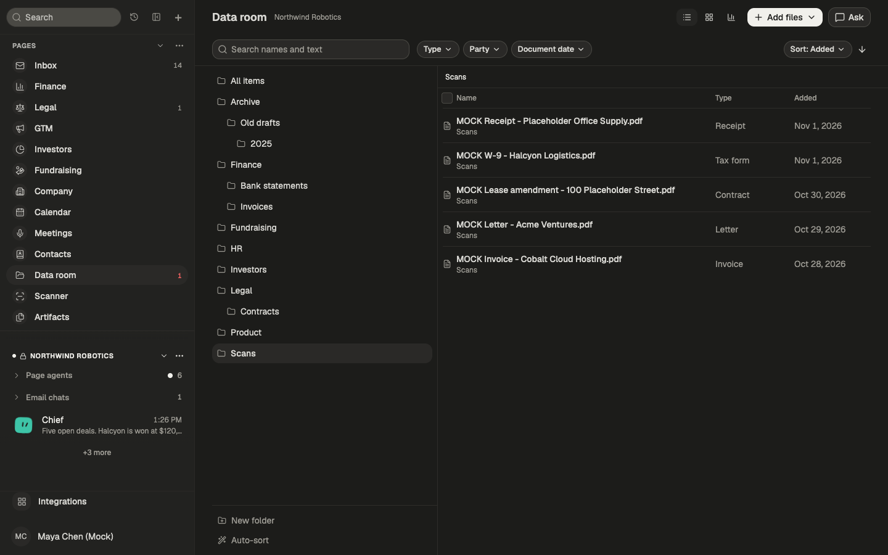
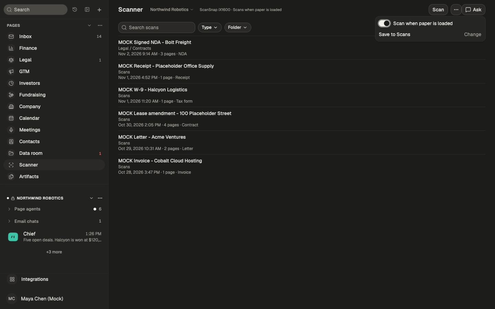

Scanner page mockups (MOCK data)
Built by editing the DOM of the running app. Each frame links to a static HTML snapshot.

1. Ready: scanner connected, scans listed, Scanner agent docked. html

2. Scanning: Scan disabled, an in-progress row at the top. html

3. Reading: the uploaded scan is being read; the agent says so. html

4. No scanner found: Scan disabled, earlier scans still listed. html

4b. sane-backends missing: Copy command next to the status. html

5. In the Data room, a scan is an ordinary document in the Scans folder. html

6. Scanner settings: auto-scan switch and save folder. html